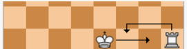

체스하쉴? 캐슬링
home
체스의 기물
스테일 메이트
앙파상
캐슬링
오프닝
체크메이트
캐슬링(Castling)은 체스의 특수 규칙 가운데 하나이다
3개의 조건을 만족할 경우 킹을 두 칸 옆으로 옮기고 룩을 킹의 반대편 옆으로 옮길 수 있다
곧 한 턴에 2개의 기물을 움직이는 것을 허용하는 규정이다.

개인적으로 가장좋아하는 수가 바로 이 캐슬링이다 킹이 안전해지기 때문이다
캐슬링은 킹사이드 퀸사이드로 나뉜다 하는 방법은 같다